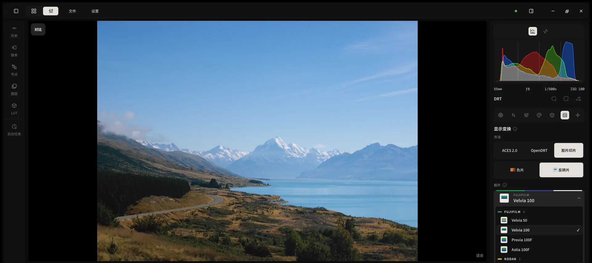
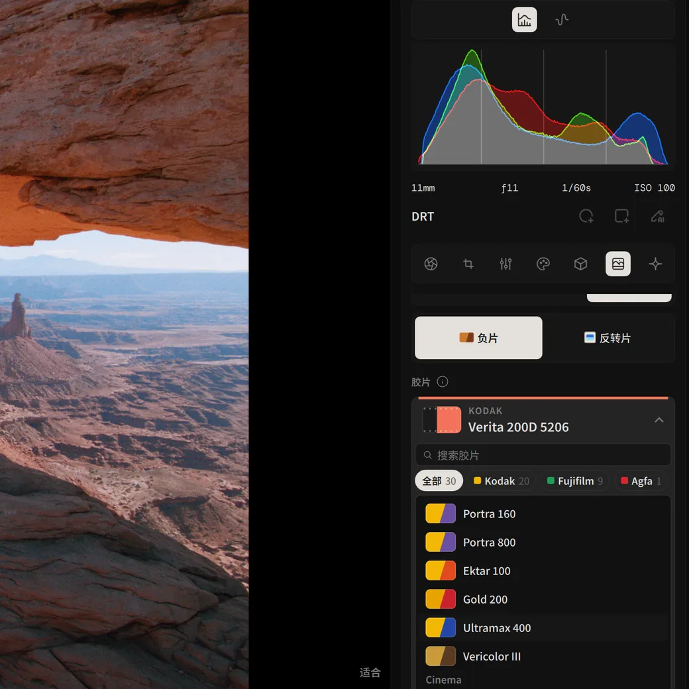
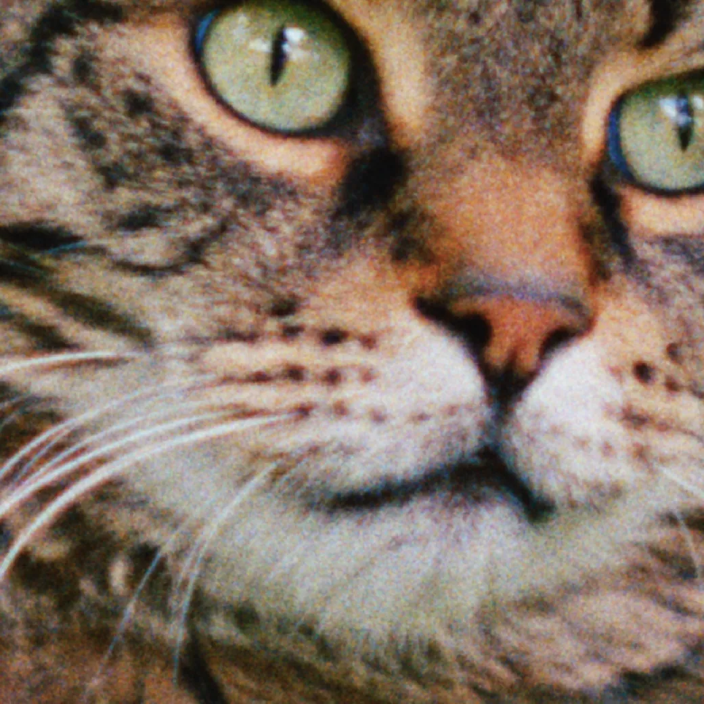
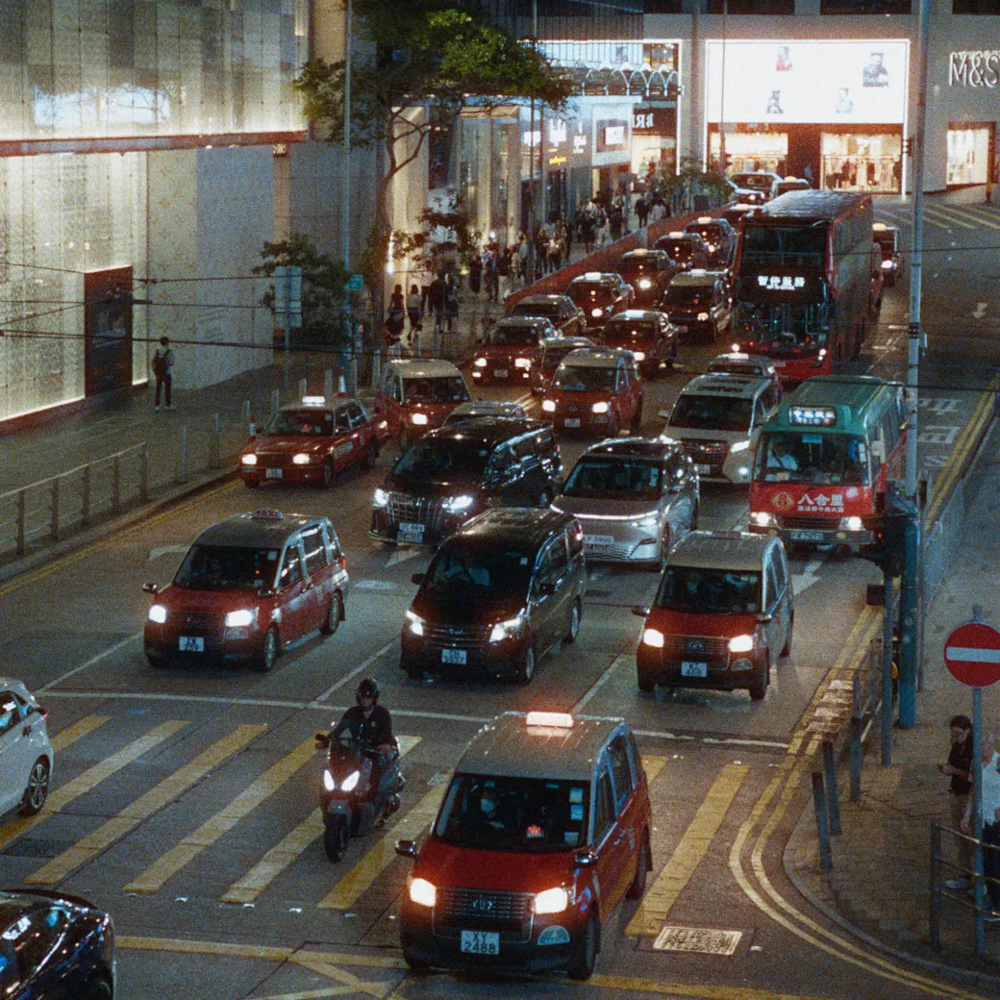
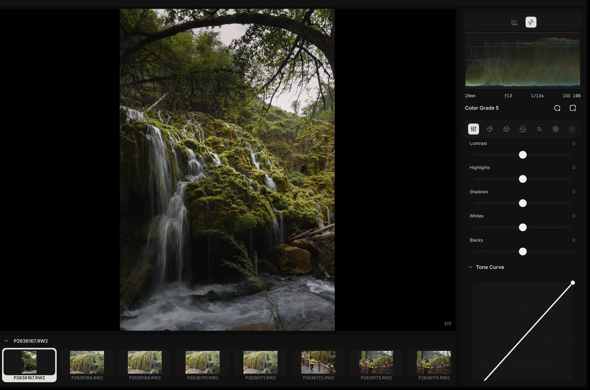
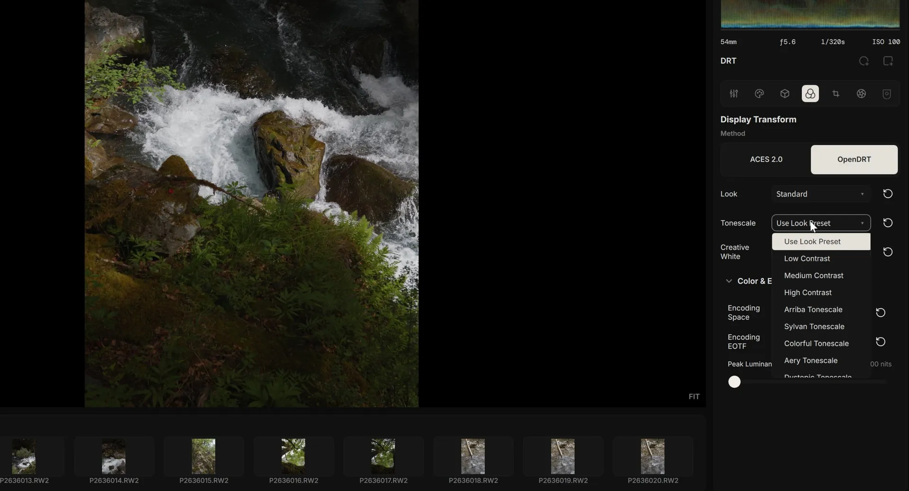
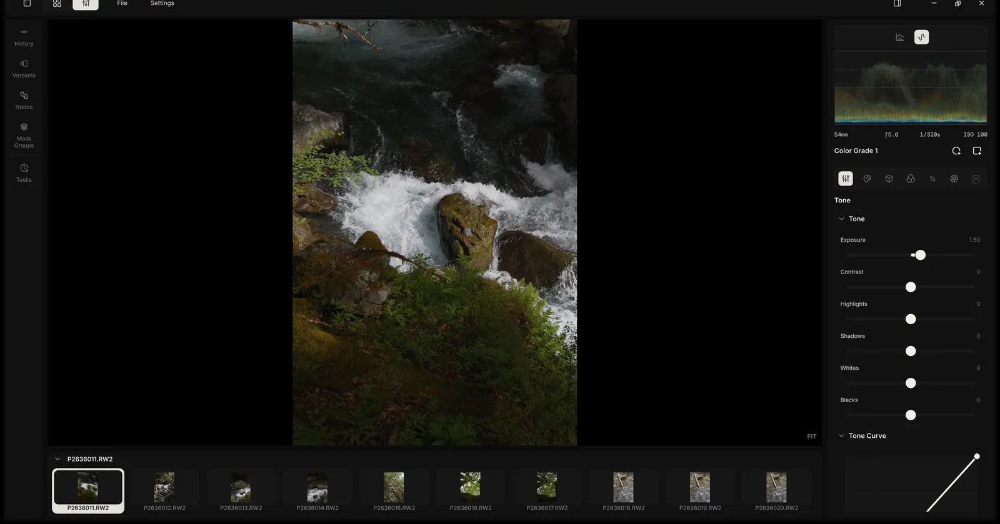
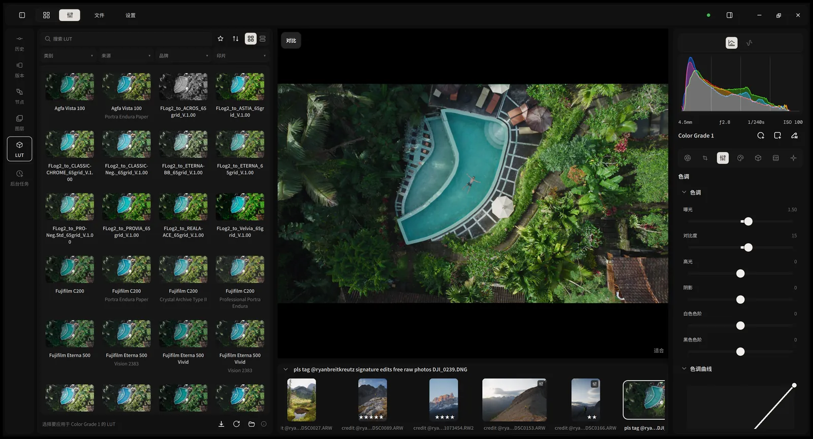
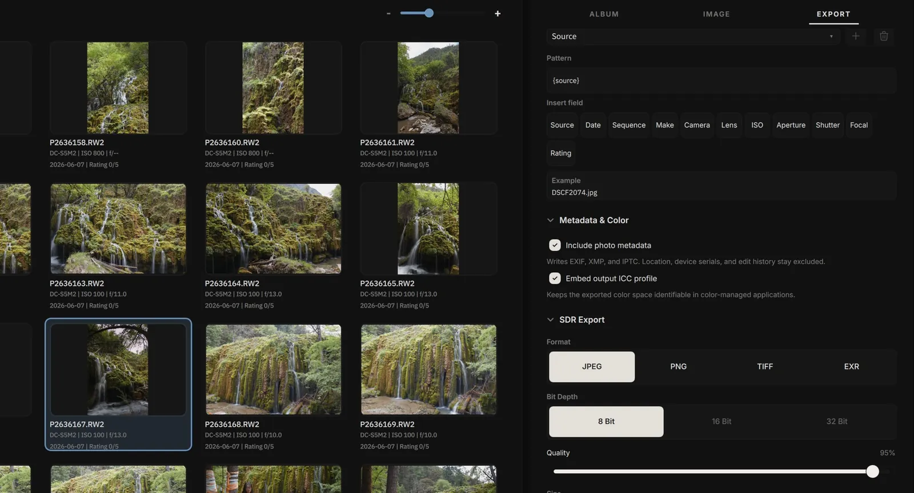

从 RAW 文件到成片。
解码、色彩、调色、图库与导出，集于一个开源应用，支持 Windows 与 Mac。
Windows 10/11 x64 · Apple Silicon Mac · 免费开源（GPL-3.0）

照片：Old Mt. Cook NZ，作者 mino，来自 discuss.pixls.us，CC BY-SA 4.0 许可；在 Alcedo Studio 中编辑。
0.3.5 新增
胶片印片
作为显示渲染变换使用的光谱胶片模拟：30 款彩色负片和 5 款彩色反转片，可以印放、扫描，或以灯箱观看。
胶片模拟说明
照片：Zojo-ji and the Tokyo Tower，作者 Duecki1，来自 discuss.pixls.us，CC BY-SA 4.0 许可；在 Alcedo Studio 中编辑。
印片
Kodak Vision3 500T 印放到 Kodak Vision 2383，输出 Rec. 709 SDR。

负片扫描
同一张负片经扫描反相，再由 OpenDRT 输出 SDR 或 HDR。

反转片
Fujichrome Velvia 100，灯箱观看。

胶片浏览器
可搜索胶片并按品牌筛选，每款胶片显示色卡。 照片：Arches National Park (Utah, USA)，作者 LaurentFromSF，来自 discuss.pixls.us，CC BY-SA 4.0 许可；在 Alcedo Studio 中编辑。

片幅与颗粒
Kodak Ektar 100，16mm 片幅，放大到 218%。颗粒使用该片种的颗粒度数据。 照片：Big kitty in the brush，作者 mino，来自 discuss.pixls.us，CC BY-SA 4.0 许可；在 Alcedo Studio 中编辑。

夜晚街道
Kodak Vision3 500T 负片扫描，16mm 片幅。

前三张是同一张维多利亚港的 RAW 文件，由 alcedo-cli 渲染。夜晚街道同样是开发者在香港拍摄的。
技术规格
- 负片
- 30 款彩色负片：Kodak 20 款、Fujifilm 9 款、Agfa 1 款
- 反转片
- Fujichrome Velvia 50、Velvia 100、Provia 100F、Astia 100F 和 Kodak Ektachrome E100，灯箱观看
- 印片
- 18 种摄影相纸和电影印片胶片，例如 Kodak Endura Premier、Vision 2383 和 Fuji Crystal Archive；Cine Look（Kodak Vision 2383）为单独选项；输出 Rec. 709 SDR
- 负片扫描
- 虚拟扫描器读取并反转负片，由 OpenDRT 输出 SDR 或 HDR；可调扫描曝光、对比度、青、品、黄和黑位；默认启用 50% 强度的“中性”自动校色
- 场景光
- 默认“按拍摄参数”，读取 RAW 白平衡的色温与色调
- 片幅
- 16mm、35mm 或 70mm；决定颗粒相对画面的大小，较小片幅也会放大光扩散和光晕
- 颗粒
- 在印片或扫描前形成于胶片层中，使用所选片种的颗粒度数据；强度 0–200%；缩放时颗粒尺度不变
- GPU
- CUDA、OpenCL 和 Metal；胶片数据随安装包提供
- 命令行
- alcedo-cli 的 film.list 列出可用胶片，供脚本编辑和渲染使用
- 数据
- spectral_film_lut 数字化的数据手册；fotufilm 的 Astia 100F 配置文件（CC BY-SA 4.0）
0.3.4 新增
AI 蒙版、搜索与更多
AI 蒙版与范围蒙版、AI 模型设置页、新的搜索面板，以及在当前照片上预览 LUT。
完整发布说明AI 蒙版
选择主体、背景、天空或人物，也可以通过点选、绘制路径或框选来选择任意物体。工具内有独立的撤销与重做，点击“确认”后保存为一条历史记录。
明度/色相范围
任意蒙版都可以按明度和色相限制，提供双滑块范围条、数值输入、柔和度和饱和度门槛。
AI 模型设置
在同一页面下载和管理 AI 蒙版模型与 CLIP 搜索模型，模型卡片显示许可证、大小和下载进度。模型按需加载。
搜索面板
最近搜索、命令、筛选项和照片预览集中在一个窗口，按 Enter 将搜索应用到图库。
色轮
Lift、Gamma、Gain 分别调整暗部、中间调和高光，新增的 Offset 色轮统一偏移所有明暗区域。Master 数值以 EV 为单位。
图库卡片
照片卡片显示编辑标记和星级，较大的卡片支持点击星星评分。胶片条跟随图库筛选。
命令行
AI Agent
alcedo-cli 随 Alcedo Studio 一起安装，把界面背后的命令交给 Agent：打开、导入、评分、修图、预览、搜索与导出。
Agent 用的 Alcedo skill技术规格
- 命令行
- alcedo-cli，安装在应用旁边（macOS 上位于应用包内）；输入与输出均为 JSON
- Agent
- Claude Code、Codex 等能运行命令行的 Agent；Alcedo skill 教会它们使用这些命令
- 命令
- 项目、导入、评分、所有编辑参数、LUT、胶片印片的胶片、版本、预览、搜索与导出
- 会话
- 不开窗口的后台会话，适合批量处理；或你正在使用的窗口
- 控制权
- Agent 操作期间编辑控件锁定，仍可平移、缩放和查看示波器；“停止”立即收回控制权
- 历史记录
- 标出 Agent 所做的编辑并显示它的备注；撤销与你自己的编辑一样有效
节点与蒙版
每个调色节点都有自己的调整和蒙版，局部调整只作用于蒙版范围之内。

技术规格
- 节点结构
- Develop → Color Grade 节点（数量不限）→ Display Transform
- 调色工具
- 影调 · 局部色调映射 · Lift / Gamma / Gain 与 Offset 色轮 · 色调曲线 · 可选颜色 · 细节
- 节点编辑
- 新增、连线、重命名、多选、批量删除；记入历史与版本
- 删除保护
- 默认调色层自动上锁，任意图层均可手动上锁
- 蒙版类型
- 线性渐变 · 径向渐变 · AI 蒙版
- AI 蒙版 新
- 主体、背景、天空、人物；或点选、绘制路径、框选。添加与减去选区，单独加入或移除人物，羽化与扩展；模型在本机运行，已保存的蒙版渲染时无需模型
- 范围 新
- 任意蒙版可用明度和色相范围限制，带柔和度和饱和度门槛；“显示选区”查看覆盖范围
- 蒙版参数
- 位置、半径、旋转、内外羽化、不透明度、反转
- 蒙版数量
- 每个节点可叠加多个，在蒙版组面板中按层管理并显示缩略图
场景参考色彩
全程 32 位浮点，在 ACEScc 对数空间中调色，曝光与影调的响应均匀。

技术规格
- 数值精度
- 全程 32 位浮点
- 相机色彩
- 相机色彩矩阵；部分机型为 rawtoaces-data 光谱数据
- 调色空间
- ACEScc（AP1 原色）
- 显示渲染变换
- ACES 2.0 · OpenDRT · 胶片印片
- 输出目标
- Rec.709 · Display P3 · Rec.2020，含 PQ 与 HLG
- HDR 监看
- macOS 扩展动态范围（EDR）
- 对比度
- 作用于 OkLab 亮度的 S 曲线，不改变整体亮度，也不偏色
- LUT 编码
- 50 种场景与显示编码，用于 LUT 的输入和输出；显示编码输出经 ACES 2.0 逆输出变换转回场景
- JPEG、PNG、TIFF、OpenEXR
- 读取内嵌色彩配置文件，转换到 ACES；OpenEXR 以及 PQ 或 HLG 图像标记为 HDR
渲染引擎
GPU 上的渲染图：RAW 解码与几何处理的结果会缓存，Color Grade 节点在每次改动时重新计算。

技术规格
- Windows
- CUDA（NVIDIA）· OpenCL（AMD / Intel）
- macOS
- Metal（Apple Silicon）
- 缓存
- RAW 解码与几何处理的结果按版本号缓存并复用；Color Grade 节点不缓存，每次改动都重新计算
- 工作显存
- Color Grade 节点使用两块 RGBA32F 缓冲交替读写，显存不随节点数量增长
- 瞬态显存
- 去马赛克、高光重建与局部色调映射共用同一内存池，渲染结束即释放
- 同一条管线
- 编辑预览、缩略图、分析与导出；缩略图和导出使用独立的 GPU 资源，不拖慢预览
- 预览
- 拖动时长边 2560 像素，静止时 4096 像素；放大时仅渲染可见区域
- 示波器
- 直方图 · RGB 波形图，通道填充显示并标出暗部与高光溢出
图库与检索
基于 DuckDB 嵌入式数据库，检索全部在本机进行。

技术规格
- 工程文件
- 单一 .alcd 文件：目录、元数据、语义索引、编辑历史；可打开数据库超过 2 GiB 的项目，保存时分块读写数据库
- 搜索速度
- 两万张图库：输入即预览约 12 毫秒，应用搜索 13–21 毫秒，在后台线程运行
- 搜索面板 新
- 最近搜索、命令、筛选项和照片预览集中在一个窗口；按 Enter 将搜索应用到图库
- 搜索词
- “6.7”识别为 6 月 7 日；“iso800”不匹配 ISO 8000；“dng”识别为文件类型；多个词同时满足
- 元数据筛选
- 相机、镜头、光圈、快门、ISO、日期、评分的任意组合
- 语义搜索
- 本地多语言 CLIP 模型与 HNSW 向量索引；在“设置 > AI 模型”中下载和激活
- 影集 新
- 紧凑的层级树：就地新建和重命名、拖动移动，显示照片数量
- 照片卡片 新
- 编辑标记和星级；较大的卡片支持点击星星评分
- 拍摄热力图
- 全年拍摄活跃度，点击某天即可筛选
- 导入
- RAW、JPEG、PNG、TIFF 与 OpenEXR，每个文件夹可按类型选择，按文件内容识别
- 排序与分组
- 按任意字段、导入日期或最后编辑时间；分组可折叠和展开
LUT 与后期效果
113 款胶片 LUT、你自己的 .cube 文件，以及在预览和导出中一致的后期效果。

照片：Ryan Breitkreutz（@ryanbreitkreutz），来自 Signature Edits 免费 RAW 照片。
技术规格
- 胶片 LUT
- 113 款，分属官方 Spectral Film LUT 与 spektrafilm 两个 LUT 包；在“设置 > LUT”中下载，安装前校验签名
- LUT 浏览器
- 网格或列表；按分类、来源、品牌和印片筛选；强度 0–100%
- 预览 新
- 网格卡片以当前照片导入时的初始效果预览每个 LUT，不包含之后的编辑
- 编码 新
- 输入和输出编码选择器支持搜索；0.3.4 新增 24 种编码，包括 Canon Log、Cineon、Apple Log 2 和 F-Log2 C
- 自己的 LUT
- LUT 库任意文件夹中的 .cube 文件，归入“User”分类
- 颗粒 新
- 基于 IPOL 2017《Realistic Film Grain Rendering》；强度 0–200%；缩放时颗粒尺度不变
- 光晕
- 高反差边缘周围的微红散射（Halation）
- 黑柔滤镜
- 明亮光源泛起柔和光晕，中间调细节保持清晰
- 后期处理
- 清晰度、锐化、颗粒、光晕与黑柔滤镜集中在同一页
导出
最高 32 位浮点，支持带增益图的 HDR，每种用途都有现成的预设。

技术规格
- 预设
- 标准、网页、社交媒体、电子邮件、最高质量 JPEG、16 位 TIFF、EXR 存档，也可以保存自己的预设
- 格式
- JPEG 8 位 · PNG 8/16 位 · TIFF 8/16/32 位 · OpenEXR 16/32 位浮点 · Ultra HDR
- 尺寸
- 原始尺寸 · 长边 · 边界框 · 打印尺寸与 DPI
- 文件名变量
- 源文件名、日期、相机、镜头、光圈、快门、ISO、评分、序号
- 元数据
- EXIF、ICC 配置文件和 GPS 定位可分别选择是否保留；相机与镜头序列号以及编辑历史从不写入
- 导出位置
- 记住上次的导出文件夹，重启后依然有效
以及坚实的基础。
RAW 解码
为当代相机定制的 LibRaw 分支。
技术规格
- 相机支持
- Canon、Nikon、Sony、Fujifilm、Panasonic、OM System、Leica、Hasselblad、Phase One（包括 1.5 亿像素的 IQ4）、Pentax、Sigma，以及手机与无人机的 DNG
- Nikon HE
- Z 8、Z 9、Z 6 III 和 Z 50 II 的高效率（HE）NEF
- 相机色彩
- 0.3.4 新增 68 个相机色彩矩阵条目；DNG HueSatMap 与 LookTable 完整生效
- 去马赛克
- Bayer 默认 RCD；X-Trans 默认 GPU 神经网络引擎，Bayer 亦可选用
- 高光重建
- Inpaint Opposed，源自 darktable 与 RawTherapee
- 镜头校正 新
- Lensfun：畸变、横向色差、暗角；Lanczos-3 重采样
历史与版本
每次调整都是一条提交记录，回溯后的新改动不会覆盖历史。
技术规格
- 命名版本
- 同一张照片的多个版本，各自为独立的历史分支
- 前后对比 新
- 比较修改前后或两个版本；并排或分割线，左右或上下布局
- 按需复制 新
- 版本、节点乃至单项参数，现在也包括 RAW 解码、白平衡、镜头校正与裁剪；粘贴到多张照片时在后台运行
- 快捷键
- 可自定义，带冲突检查
AI 模型
AI 蒙版与自然语言搜索在本机运行。
技术规格
- AI 蒙版
- SAM 2.1（Hiera tiny）用于点选、路径和框选；S3OD（图像编码器为 DINOv3）用于主体
- 搜索
- 多语言 CLIP 模型；可在导入后自动打标签
- 下载
- “设置 > AI 模型”；每个模型受各自许可证约束
- 天空模型
- 训练数据的许可证不明确；商业使用前请查看模型信息
开源致谢
以 GPL-3.0 发布，建立在以下项目之上。
技术规格
- RAW 与元数据
- LibRaw · Lensfun · Exiv2
- 图像与数据
- OpenImageIO · OpenCV · OpenColorIO · DuckDB
- 界面
- Qt / QML · QuickQanava
- 色彩
- ACES 2.0 · OpenDRT（Jed Smith）· rawtoaces-data
- 胶片
- spectral_film_lut（Jan Lohse）· spektrafilm（Andrea Volpato）· fotufilm-engine · IPOL 2017 胶片颗粒
- AI 蒙版
- SAM 2.1 · S3OD · DINOv3
- 去马赛克
- RCD（Luis Sanz Rodríguez）· DemosaicNet（Gharbi 等，2016）
- 高光重建
- darktable · RawTherapee
下载 Alcedo Studio
免费开源，支持 Windows 与 Apple Silicon Mac。
Windows 10/11 x64 · Apple Silicon Mac · 免费开源（GPL-3.0）
升级须知：AI 模型和 LUT 需要在“设置”中单独下载。0.3.4 起色轮分为 Lift、Gamma、Gain 和 Offset，打开旧项目时会转换旧参数。0.3.5 移除了“高级内容分析”。0.3 无法打开 0.2.9 及更早版本创建的工程文件。
照片署名
以下照片发布在 discuss.pixls.us，以 CC BY-SA 4.0 许可共享。这些照片在 Alcedo Studio 中经过编辑，本页展示它们的截图同样以 CC BY-SA 4.0 许可共享。
- Old Mt. Cook NZ，作者 mino
- Zojo-ji and the Tokyo Tower，作者 Duecki1
- Arches National Park (Utah, USA)，作者 LaurentFromSF
- Big kitty in the brush，作者 mino
LUT 浏览器截图中的照片由 Ryan Breitkreutz（@ryanbreitkreutz）拍摄，来自 Signature Edits 免费 RAW 照片。
香港的照片由 Alcedo Studio 开发者拍摄。